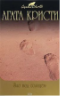

В романе "Зло под солнцем" Эркюлю Пуаро предстоит побывать на респектабельном курорте. Однако покой великому сыщику только снится: даже на отдыхе ему придется заняться привычным делом - расследовать убийство. На первый взгляд картина ясна - виной всему любовный треугольник. Но треугольник может оказаться и четырех- и пятиугольником, а может, и куда более сложной геометрической фигурой. Роман "Лощина" (в США выходил под названием "Убийство спустя часы") можно смело отнести к классическому детективному жанру "тайна загородного дома".